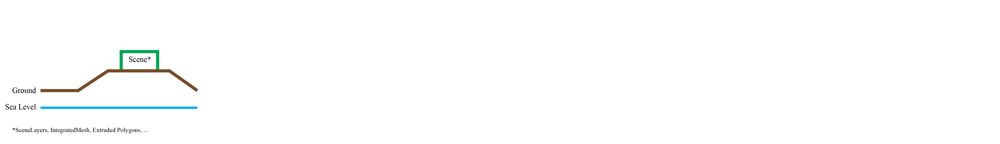
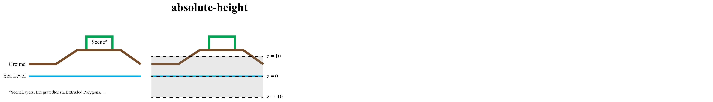
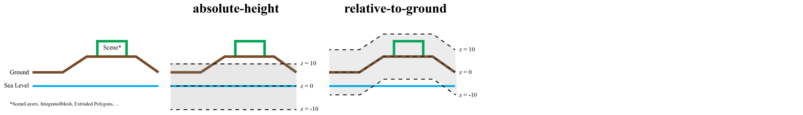
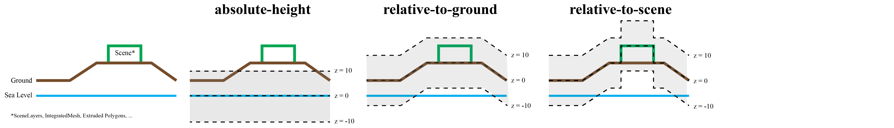
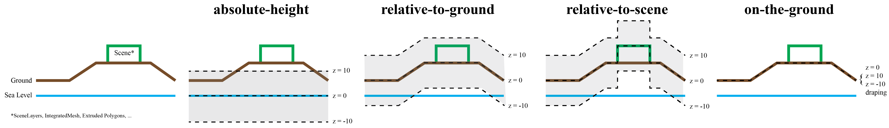

<!DOCTYPE html>
<html lang="en">
  <head>
    <meta charset="utf-8" />
    <meta name="viewport" content="width=device-width, initial-scale=1.0, maximum-scale=1.0, user-scalable=no" />

    <title>Esri Developer Summit 2020: ArcGIS API for JavaScript Presentations</title>
    <meta property="og:title" content="Esri Developer Summit 2020: ArcGIS API for JavaScript Presentations" />
    <meta property="og:type" content="website" />
    <meta property="og:image" content="https://esri.github.io/devsummit-2020-3D-jsapi/featured-slide.jpg" />
    <meta property="og:url" content="https://esri.github.io/devsummit-2020-3D-jsapi" />
    <meta name="description" content="Esri Developer Summit 2020: ArcGIS API for JavaScript Presentations">
    <meta property="og:description" content="Esri Developer Summit 2020: ArcGIS API for JavaScript Presentations">
    <link rel="stylesheet" href="./css/reveal.css" />
    <link rel="stylesheet" href="./css/theme/black.css" id="theme" />
    <!-- <link rel="stylesheet" href="./css/highlight/railscasts.css" /> -->
    <link rel="stylesheet" href="./css/print/paper.css" type="text/css" media="print" />
    <link rel="stylesheet" href="./assets/style.css" />

    <script src="https://cdnjs.cloudflare.com/ajax/libs/animejs/2.0.2/anime.min.js"></script>
  </head>
  <body>
    <div class="reveal">
      <div class="slides"><section  data-markdown><script type="text/template"><!-- .slide: data-background="images/bg-1.png" data-title="add-scene-layer" class="title" -->

# ArcGIS API for JavaScript
## Web editing in 3D


David Koerner, Esri R&D Center Zürich

2020 ESRI DEVELOPER SUMMIT​ | Palm Springs, CA
</script></section><section  data-markdown><script type="text/template"><!-- .slide: data-background="images/bg-2.png" -->

## **3d editing workflows**</script></section><section  data-markdown><script type="text/template">
<!-- .slide: data-background="images/bg-2.png" -->

### **`Editor` widget support in SceneView (3D)**

<div class="two-columns">
  <div class="left-column">

  <ul>
  <li>
  works out of the box - no addtitional changes needed
  </li>
  <li>
  pass SceneView to editor
  </li>
  <li>
  use of SketchViewModel, FeatureForm and Editor-widget remains exactly the same as in 2d
  </li>
  </ul>

  <div class="code-snippet">
    <button class="play" id="addEditor"></button>

```ts
// Create the Editor with SceneView
var editor = new Editor({ view: view });
view.ui.add(editor, "top-right");
```
  </div>
  </div>
  <div class="right-column">
    <iframe data-src="./samples/web-editing/3d-basic-editing/index-basic-editing.html" ></iframe>
  </div>
</div>
</script></section><section  data-markdown><script type="text/template">
<!-- .slide: data-background="images/bg-3.png" -->

### **Editing support for z values and elevation modes**
</script></section><section  data-markdown><script type="text/template">
<!-- .slide: data-background="images/bg-3.png" -->

### **Editing support for z values and elevation modes**

<a href="https://https://jscore.esri.com/javascript/latest/api-reference/esri-layers-FeatureLayer.html#elevationInfo"></a>
</script></section><section  data-markdown><script type="text/template">
<!-- .slide: data-background="images/bg-3.png" -->

### **Editing support for z values and elevation modes**

<a href="https://https://jscore.esri.com/javascript/latest/api-reference/esri-layers-FeatureLayer.html#elevationInfo"></a>
</script></section><section  data-markdown><script type="text/template">
<!-- .slide: data-background="images/bg-3.png" -->

### **Editing support for z values and elevation modes**

<a href="https://https://jscore.esri.com/javascript/latest/api-reference/esri-layers-FeatureLayer.html#elevationInfo"></a>
</script></section><section  data-markdown><script type="text/template">
<!-- .slide: data-background="images/bg-3.png" -->

### **Editing support for z values and elevation modes**

<a href="https://https://jscore.esri.com/javascript/latest/api-reference/esri-layers-FeatureLayer.html#elevationInfo"></a>
</script></section><section  data-markdown><script type="text/template">
<!-- .slide: data-background="images/bg-3.png" -->

### **Editing support for z values and elevation modes**

<a href="https://https://jscore.esri.com/javascript/latest/api-reference/esri-layers-FeatureLayer.html#elevationInfo"></a>
</script></section><section  data-markdown><script type="text/template">
<!-- .slide: data-background="images/bg-2.png" -->

### **Feature creation**

<div class="two-columns">
  <div class="left-column">
  <div class="code-snippet">
    <button class="play" id="create0"></button>

```ts
// featureLayerWithoutZ.capabilities.data.supportsZ == false
view.map.add(featureLayerWithoutZ);
```
  </div>
  <div class="code-snippet">
    <button class="play" id="create1"></button>

```ts
// featureLayerWithZ.capabilities.data.supportsZ == true
view.map.add(featureLayerWithZ);
```
  </div>
  <div class="code-snippet">
    <button class="play" id="create2"></button>

```ts
view.map.add(extrudedPolygonFeatureLayer);
```
  </div>

  <div class="code-snippet">
    <button class="play" id="create3"></button>

```ts
editor.supportingWidgetDefaults = {
  sketch:{
    polygonSymbol: featureLayer.renderer.symbol
  }
};
```
  </div>

  <div class="code-snippet">
    <button class="play" id="create4"></button>

```ts
featureLayerWithoutZ.elevationInfo = {mode: "relative-to-scene"};
```
  </div>

  <div class="code-snippet">
    <button class="play" id="create5"></button>

```ts
var clonedRenderer = featureLayerWithoutZ.renderer.clone();
clonedRenderer.symbol = createPathSymbol();
featureLayerWithoutZ.renderer = clonedRenderer;
```
  </div>
  </div>
  <div class="right-column">
    <iframe data-src="./samples/web-editing/3d-basic-editing/index-create-options.html" ></iframe>
  </div>
</div>
</script></section><section  data-markdown><script type="text/template">
<!-- .slide: data-background="images/bg-3.png" -->

### **Feature updating**

<div class="two-columns">
  <div class="left-column">
  <div class="code-snippet">
    <button class="play" id="updateSketch"></button>

```ts
editor.supportingWidgetDefaults = {
  sketch:{
    defaultUpdateOptions:{
      enableZ: false
    }
  }
};
```
  </div>
  </div>
  <div class="right-column">
    <iframe data-src="./samples/web-editing/3d-basic-editing/index-update-options.html" ></iframe>
  </div>
</div>
</script></section><section  data-markdown><script type="text/template">
<!-- .slide: data-background="images/bg-3.png" -->

### **Editing data with visual variables**


<div class="two-columns">
  <div class="left-column">
  <div class="code-snippet">
    <button class="play" id="applySizeVisualVariable"></button>

```ts
function applySizeVisualVariable(){
  const renderer = cubesFeatureLayer.renderer.clone();
  renderer.visualVariables = [
    {
      type: "size",
      field: "size",
      valueUnit: "meters"
    }
  ];
  cubesFeatureLayer.renderer = renderer;
}
```
  </div>
  <div class="code-snippet">
    <button class="play" id="applyRotationVisualVariable"></button>

```ts
function applyRotationVisualVariable(){
  const renderer = cubesFeatureLayer.renderer.clone();
  renderer.visualVariables = [
    {
      type: "rotation",
      field: "rotation",
      rotationType: "geographic"
    }
  ];
  cubesFeatureLayer.renderer = renderer;
}
```
  </div>
    <div class="code-snippet">
    <button class="play" id="visualVariableUpdate"></button>

```ts
editor.supportingWidgetDefaults = {
  sketch:{
    defaultUpdateOptions:{
      enableRotation: false,
      enableScaling: false
    }
  }
};
```
  </div>

  </div>
  <div class="right-column">
    <iframe data-src="./samples/web-editing/3d-basic-editing/index-editing-visual-variables.html" ></iframe>
  </div>
</div>
</script></section><section  data-markdown><script type="text/template">

<!-- .slide: data-background="images/bg-3.png" -->

### **Update client application graphics from feature edits**

<div class="two-columns">
  <div class="left-column">
  <div class="code-snippet">
    <button class="play" id="sync0"></button>

```ts
function createClientGraphics(){ ... }
```
  </div>
  <div class="code-snippet">
    <button class="play" id="sync1"></button>

```ts
function synchronizeClientGraphics( objectid ){
  const query = featureLayer.createQuery();
  query.returnZ = true;
  query.objectIds = [objectid];
  featureLayer.queryFeatures(query).then(function(featureSet){
    synchronizeClientGraphicsFromFeature(featureSet.features[0]);
  });
}
featureLayer.on("edits", function(edits){
  edits.updatedFeatures.forEach( function(feature){
    synchronizeClientGraphics(feature.objectId);
  });
});
```
  </div>
  <div class="code-snippet">
    <button class="play" id="sync2"></button>

```ts
editor.viewModel.sketchViewModel.on("update", function(e){
  if(e.state == "active"){
    synchronizeClientGraphicsFromFeature(e.graphics[0]);
  }
});
```
  </div>
  </div>
  <div class="right-column">
    <iframe data-src="./samples/web-editing/3d-basic-editing/index-synchronization.html" ></iframe>
  </div>
</div>
</script></section><section  data-markdown><script type="text/template">
<!-- .slide: data-background="images/bg-2.png" -->

## Advanced 3d editing example

<div>
<iframe style="width:70%" data-src="./samples/web-editing/3d-web-editing-demo/index.html" ></iframe>
</div>
</script></section><section  data-markdown><script type="text/template">
<!-- .slide: data-background="images/bg-2.png" -->

## Thank you
</script></section></div>
    </div>

    <script src="./js/reveal.js"></script>

    <script>
      function extend() {
        var target = {};
        for (var i = 0; i < arguments.length; i++) {
          var source = arguments[i];
          for (var key in source) {
            if (source.hasOwnProperty(key)) {
              target[key] = source[key];
            }
          }
        }
        return target;
      }

      // Optional libraries used to extend on reveal.js
      var deps = [
        { src: './plugin/markdown/marked.js', condition: function() { return !!document.querySelector('[data-markdown]'); } },
        { src: './plugin/markdown/markdown.js', condition: function() { return !!document.querySelector('[data-markdown]'); } },
        // { src: './plugin/highlight/highlight.js', async: true, callback: function() { hljs.initHighlightingOnLoad(); } },
        { src: './plugin/zoom-js/zoom.js', async: true },
        { src: './plugin/notes/notes.js', async: true },
        { src: './plugin/math/math.js', async: true },
        { src: './prism/plugin.js', async: true }
      ];

      // default options to init reveal.js
      var defaultOptions = {
        controls: true,
        progress: true,
        history: true,
        center: true,
        transition: 'default', // none/fade/slide/convex/concave/zoom
        dependencies: deps
      };

      // options from URL query string
      var queryOptions = Reveal.getQueryHash() || {};

      var options = extend(defaultOptions, {"transition":"none","backgroundTransition":"none","width":1366,"height":768,"preloadIframes":true}, queryOptions);
    </script>


    <script>
      Reveal.initialize(options);

      // Define default background
      // for (var slide of document.getElementsByTagName('section')){
      //   if (!(slide.getAttribute('data-background') ||
      //         slide.getAttribute('data-background-video') ||
      //         slide.getAttribute('data-background-iframe') ||
      //         slide.getAttribute('data-background-image'))){
      //     slide.setAttribute('data-background', 'images/bg-2.png');
      //     slide.setAttribute('data-background-image', 'images/bg-2.png');
      //   }
      // }

      Reveal.addEventListener('ready', function(event) {
        addEventListener("message", function(event) {
          if (event.data && event.data.type === "fullscreen") {
            if (document.webkitCurrentFullScreenElement) {
              document.webkitExitFullscreen();
              return;
            }
            var iframes = document.querySelectorAll("iframe");
            for (var i = 0; i < iframes.length; i++) {
              var iframe = iframes[i];
              if (iframe.contentWindow === event.source) {
                iframe.webkitRequestFullscreen();
                return;
              }
            }
          }
        });

        var playButtons = document.querySelectorAll('[data-play-frame]');

        for (var i = 0; i < playButtons.length; i++) {
          playButtons[i].addEventListener('click', (function(frameName, argument) {
            return function(event) {
              event.stopPropagation();
              event.preventDefault();
              window.frames[frameName].contentWindow.postMessage({ play: true, argument: argument }, '*');
            };
          })(playButtons[i].getAttribute('data-play-frame'), playButtons[i].getAttribute("data-play-argument")));
          playButtons[i].addEventListener('mousedown', function(event) {
            event.preventDefault();
            event.stopPropagation();
          });
        }
      });

      Reveal.addEventListener( 'slide-animation-title', function() {
        var textWrapper = document.getElementById('letters');
        textWrapper.innerHTML = textWrapper.textContent.replace(/\S/g, "<span class='letter'>$&</span>");

        var textWrapper = document.getElementById('animation');
        textWrapper.innerHTML = textWrapper.textContent.replace(/\S/g, "<span class='letter'>$&</span>");

        anime({
            targets: '.letter',
            scale: [0.3,1],
            opacity: [0,1],
            translateZ: 0,
            easing: "easeOutExpo",
            duration: 600,
            delay: (el, i) => 1000 + 70 * (i+1)
          });
    } );
    </script>
  </body>
</html>
